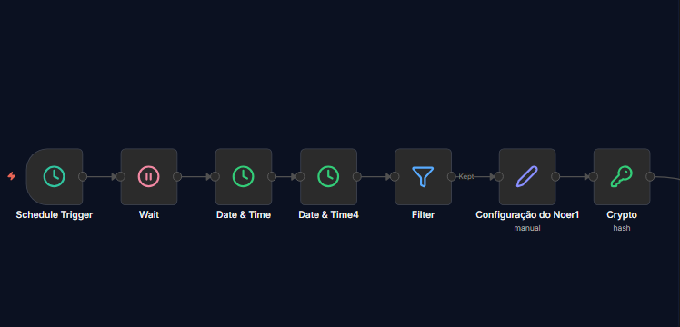
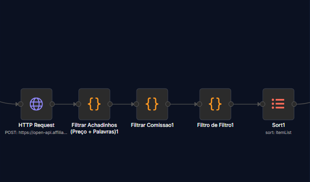
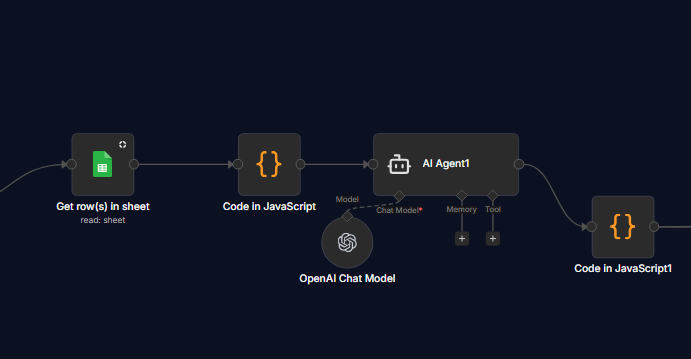
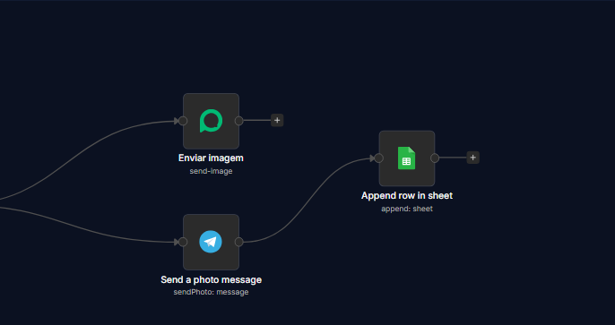

Construo ecossistemas digitais que eliminam o trabalho manual. De servidores VPS à automação de vendas para escalar o seu negócio.
Construyo ecosistemas digitales que eliminan el trabajo manual. Desde servidores VPS hasta la automatización de ventas para escalar su negocio.
Sistema que monitora "achadinhos" e publica automaticamente em grupos e redes sociais 24h por dia.
Sistema que monitoriza "ofertas" y publica automáticamente en grupos y redes sociales las 24h del día.
Chatbots naturais que atendem clientes no WhatsApp instantaneamente, organizando toda a demanda.
Chatbots naturales que atienden a clientes en WhatsApp al instante, organizando toda la demanda.
Criação de landing pages e sites profissionais otimizados para converter visitantes em clientes reais.
Creación de landing pages y sitios profesionales optimizados para convertir visitantes en clientes reales.
Fluxo automatizado que processa APIs de afiliados, formata imagens e distribui conteúdos estrategicamente.
Ver Estrutura do FluxoFlujo automatizado que procesa APIs de afiliados, formatea imágenes y distribuye contenidos estratégicamente.
Ver Estructura del FlujoIntegração ativa entre Evolution API e n8n. Teste agora a velocidade de resposta da minha automação.
Testar no WhatsAppIntegración activa entre Evolution API y n8n. Pruebe ahora la velocidad de respuesta de mi automatización.
Probar en WhatsAppEste site e todos os meus sistemas rodam em uma VPS Linux (Hostinger) gerenciada via Coolify e Docker.
Este sitio y todos mis sistemas funcionan en una VPS Linux (Hostinger) gestionada vía Coolify y Docker.
O fluxo é ativado automaticamente via Cron. Nesta etapa inicial, o sistema ajusta o fuso horário e prepara os parâmetros de segurança.
O nó principal gera as chaves de criptografia (HMAC) necessárias para garantir que a comunicação com a API de afiliados seja 100% segura e legítima, sem intervenção humana.
El flujo se activa automáticamente vía Cron. En esta etapa inicial, el sistema ajusta la zona horaria y prepara los parámetros de seguridad.
El nodo principal genera las claves de cifrado (HMAC) necesarias para garantizar que la comunicación con la API de afiliados sea 100% segura y legítima, sin intervención humana.

O sistema se conecta à base de dados da API e baixa a lista de produtos disponíveis em tempo real.
Através de lógica JavaScript personalizada, o fluxo filtra as ofertas por preço, palavras-chave e rentabilidade (comissão mínima). Apenas os melhores "achadinhos" passam para a próxima fase de processamento.
El sistema se conecta a la base de datos de la API y descarga la lista de productos disponibles en tiempo real.
A través de lógica JavaScript personalizada, el flujo filtra las ofertas por precio, palabras clave y rentabilidad (comisión mínima). Solo las mejores ofertas pasan a la siguiente fase de procesamiento.

Os dados técnicos do produto são cruzados com uma planilha do Google Sheets para ganhar contexto de negócio.
O Agente de IA atua como um copywriter, analisando as especificações e escrevendo um texto publicitário persuasivo, utilizando gatilhos mentais e emojis adequados para máxima conversão do público.
Los datos técnicos del producto se cruzan con una hoja de cálculo de Google Sheets para ganar contexto de negocio.
El Agente de IA actúa como un copywriter, analizando las especificaciones y escribiendo un texto publicitario persuasivo, utilizando gatillos mentales y emojis adecuados para la máxima conversión del público.

Com a imagem e a legenda finalizadas, o conteúdo é disparado simultaneamente para a Evolution API (WhatsApp) e para os canais VIPs do Telegram.
Como última etapa de governança, cada disparo bem-sucedido é documentado em uma nova linha no Google Sheets, criando um log de auditoria completo para análises futuras.
Con la imagen y el texto finalizados, el contenido se dispara simultáneamente a Evolution API (WhatsApp) y a los canales VIP de Telegram.
Como última etapa de gobernanza, cada envío exitoso se documenta en una nueva fila en Google Sheets, creando un registro de auditoría completo para análisis futuros.

Disponível para oportunidades na Europa (Espanha) e trabalho remoto. Disponible para oportunidades en Europa (España) y trabajo remoto.
Freelance | 2024 - Atual
Desenvolvimento de soluções com n8n e gestão de infraestrutura em VPS.
Desarrollo de soluciones con n8n y gestión de infraestructura en VPS.
Logística e Conformidade
Logística y Conformidad
Foco em resolução de problemas e conformidade de processos sob pressão.
Enfoque en resolución de problemas y conformidad de procesos bajo presión.
Descomplica Faculdade Digital
SENAI Vila Canaã (1.440 horas)
SENAI Vila Canaã (1.440 horas)
A minha base em Segurança no Trabalho ensinou-me que processos precisam de ser seguros e à prova de falhas. Aplico esse rigor em cada automação que desenvolvo.
Entendo que tecnologia só tem valor se resolver um problema real de negócio ou de tempo.
Mi base en Seguridad Laboral me enseñó que los procesos deben ser seguros y a prueba de fallos. Aplico este rigor en cada automatización que desarrollo.
Entiendo que la tecnología solo tiene valor si resuelve un problema real de negocio o de tiempo.